Equalize
An equalizer, known to be graphic.
Music on a Raspberry Pi LED panel, in sixteen styles from classic bars to Dance Dance Revolution. Free and open source.
Sixteen styles

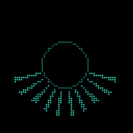
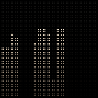


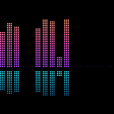
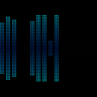
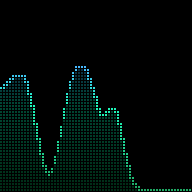
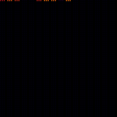
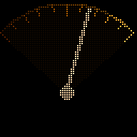
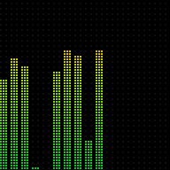
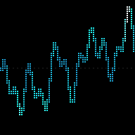
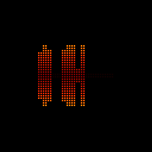
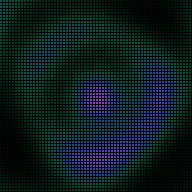
Animations are rendered by Equalize’s own code from a built-in demo track, not recorded from a real panel. Every style works with every colour theme and panel size.
How it works
No microphone
The Pi never listens to the room. It appears as a silent speaker called “Equalize” and receives the same digital audio your speakers get, in step with them.
Two ways in
AirPlay 2 for Apple Music and most apps: tick your speaker and Equalize in the AirPlay picker.
Spotify Connect for Spotify (Premium): choose Equalize in Spotify’s device list.
Works with Spotipi Photo
Both can share one Pi and take turns on the panel: album covers and photos when you play to the speaker alone, the equalizer when you play to the speaker and Equalize.
What you need
Hardware
Raspberry Pi 3 Model A+, Adafruit RGB Matrix Bonnet, a 64×64 3 mm LED panel and a 5 V 4 A supply. For 128×64, chain two panels and use 5 V 8 A. Panels of 64×32, 32×64 and 64×128 also work.
Control panel
A web page on your phone (equalize.local) sets style, colours, brightness, sensitivity, number of bars, a screen timer, quiet hours and a sunrise/sunset dimmer.
Status
Running on a real Raspberry Pi and LED panel, and ready for release.